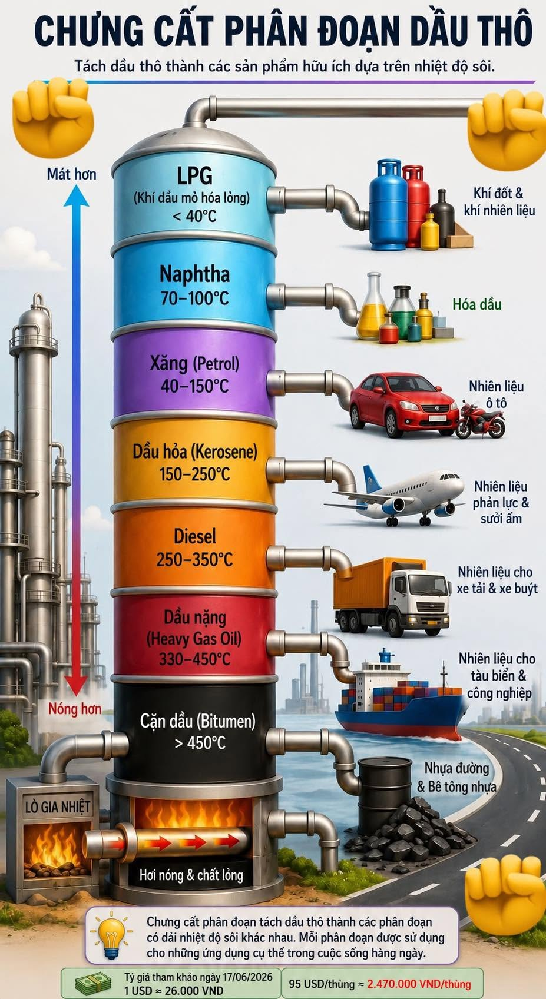

Tiến độ
0%
Bộ ôn luyện đầy đủ cho vị trí Chuyên viên Logistics tại BSR: thuê tàu & charter party, laytime/demurrage, cấu trúc giá dầu, Incoterms, hàng hải quốc tế & trong nước, công cụ Platts/Argus — kèm link tài liệu để học sâu. Học xong tick đủ 11 mục là tự tin bước vào phòng phỏng vấn.
JD gộp hai mã: MN25 (KD dầu thô nhập khẩu / nguyên liệu) và MN26 (Logistics). Bạn ứng tuyển MN26 — yêu cầu bằng Kỹ sư Hàng hải/Vận tải hoặc Cử nhân Logistics. Đây là lợi thế: nền Logistics & Supply Chain + Thuật toán (HCMUT), cộng kinh nghiệm EPC dầu khí tại PTSC M&C.
| Yêu cầu trong JD | Năng lực họ dò | Mục |
|---|---|---|
| Tốt nghiệp ĐH chính quy loại khá+; Cử nhân Logistics / KS Hàng hải | Nền tảng đúng ngành | Bạn đã có ✓ |
| KD, đàm phán hợp đồng TMQT & thủ tục | Incoterms, L/C, đàm phán | → 07 |
| Phân tích thị trường, địa chính trị, cấu trúc giá (lợi thế) | Brent/Dubai, Platts, crack spread | → 06 & 08 |
| Kinh nghiệm KD, TMQT, phân tích, logistics | Câu chuyện cá nhân | → 11 |
| Thuê tàu, đàm phán hợp đồng thuê tàu, quy định hàng hải QT/trong nước | Lõi MN26: chartering | → 04 & 05 |
| Thị trường vận tải dầu khí, loại tàu, charter party, thời gian làm hàng, phí lưu tàu | VLCC/Suezmax, laytime, demurrage | → 04 |
| IELTS 5.0+ | Đọc hợp đồng/Platts, giao tiếp | → 10 |
| Excel nâng cao, PPT, AI, SAP; Platts/Argus, Bloomberg, Reuters | Công cụ phân tích | → 09 |
| Ưu tiên nam; tuổi ≤26 (mới ra trường) / ≤28 (≥3 năm KN) | Điều kiện hành chính | Tự kiểm tra |
Thuộc số liệu & chuỗi cung ứng Dung Quất.
Phần nặng nhất — ôn đi ôn lại.
Luyện trả lời + flashcard + quiz mỗi ngày.
Phần này gần như chắc chắn được hỏi. Mục tiêu: nói trôi chảy về công ty, nhà máy, sản phẩm, tài chính, chiến lược — kèm con số.
| Hạng mục | Thông số |
|---|---|
| Vị trí | KKT Dung Quất, xã Vạn Tường, tỉnh Quảng Ngãi (~956 ha) |
| Tiếp nhận dầu thô | Phao SPM (rót dầu một điểm neo), tàu 80.000–150.000 DWT; sau nâng cấp tới 300.000 DWT (VLCC giảm tải) |
| Ống ngầm SPM → bể | ~3,2 km dưới biển + ~1,2 km đất liền (tổng ~4,2 km) |
| Bể chứa dầu thô | 8 bể × 65.000 m³ (Ø69m, cao 22,4m) |
| Phân xưởng chính | CDU 140k thùng/ngày, RFCC, CCR, NHT… + nhà máy hạt nhựa PP |
| Cảng xuất sản phẩm | 6 bến, tàu 1.000–30.000 DWT; đê chắn sóng ~1.600m |
LPG, Propylene/hạt nhựa Polypropylene (PP), xăng RON 92 / 95, E5/E10, dầu hỏa, Jet A1 / Jet A1K, DO, FO và lưu huỳnh. Sản lượng ~6,2–7,9 triệu tấn/năm.
Tham khảo (kiểm tra lại sát ngày PV): Chủ tịch HĐQT — Bùi Ngọc Dương; Tổng Giám đốc — Nguyễn Việt Thắng; GĐ NMLD — Cao Tuấn Sĩ.
Giá trị cốt lõi nhấn mạnh Chính trực & Chuyên nghiệp. Lồng tinh thần 4 KPI "An toàn – Chất lượng – Tiến độ – Chi phí" khi trả lời sẽ rất hợp gu BSR.
Trong phỏng vấn Logistics, việc hiểu sản phẩm đầu ra ở từng dải nhiệt độ chứng tỏ bạn hiểu chuỗi cung ứng vật lý của nhà máy. Tại BSR, tháp CDU (Crude Distillation Unit) là "trái tim" chia tách dầu thô thành các phân đoạn:

Khí dầu mỏ hóa lỏng. Dùng làm khí đốt dân dụng và công nghiệp.
Quan trọng với BSR: Đây là nguyên liệu đầu vào cho phân xưởng hóa dầu để sản xuất hạt nhựa Polypropylene (PP) giá trị cao.
Nhiên liệu ô tô. Tại BSR sẽ được phối trộn thành xăng RON 92, RON 95 và E5.
Sản xuất nhiên liệu hàng không (Jet A1, Jet A1K). BSR là đơn vị chủ lực cung cấp Jet A1 cho thị trường VN.
Dùng cho xe tải, xe buýt, máy công nghiệp. Đây là mặt hàng có sản lượng xuất bán đường biển/đường bộ rất lớn.
Dùng làm nhiên liệu đốt cho tàu biển (liên quan trực tiếp cước Logistics) hoặc sản xuất nhựa đường.
Hiểu công việc thật giúp trả lời "vì sao em hợp vị trí này" cực thuyết phục. Logistics xoay quanh hai dòng chảy: dầu thô vào và sản phẩm ra.
Cuối 2023, BSR mua 2 lô nhỏ theo CFR: Bertam 200.000 thùng (Glencore) & WTI Midland 300.000 thùng (ExxonMobil). Thay vì 2 tàu, BSR & PVOIL đàm phán để bốc chung 1 tàu (co-load) — giảm cước & được giảm giá. Điều kiện: tổng KL ~cỡ Suezmax, lịch/địa điểm bốc gần nhau.
Bài học: tối ưu chi phí logistics + đàm phán đa bên + hiểu giới hạn kỹ thuật SPM. Khi phụ phí & bảo hiểm tăng do địa chính trị, giải pháp này càng giá trị.
| Nguồn | Xuất xứ | Đặc tính | Ghi chú |
|---|---|---|---|
| Bạch Hổ | Việt Nam | Ngọt nhẹ — thiết kế gốc | Đang suy giảm → buộc tăng nhập |
| Azeri Light | Azerbaijan (SOCAR Singapore) | Nhẹ, ít lưu huỳnh | MOU ~2 triệu thùng/tháng (2025→2035), ~50% nhu cầu |
| WTI Midland | Mỹ (ExxonMobil, Chevron) | Ngọt nhẹ | Đa dạng hóa, đối tác Mỹ |
| Murban | UAE | Nhẹ chua nhẹ | Có chuẩn giá ICE Murban |
| Bonny Light | Nigeria (Tây Phi) | Ngọt nhẹ | Nguồn bổ sung |
Chiến lược: hợp đồng dài hạn 3–5 năm, đa dạng nguồn để không phụ thuộc một nhà cung cấp; sau NCMR chế biến được hàng trăm loại dầu → linh hoạt chọn loại giá cạnh tranh.
JD nêu thẳng: "thuê tàu, đàm phán hợp đồng thuê tàu, các loại tàu, charter party, thời gian làm hàng, phí lưu tàu". Phải thuộc và nói tự nhiên cả Anh – Việt.
| Loại | Cỡ (DWT) | Chở | Liên quan BSR |
|---|---|---|---|
| MR (Medium Range) | 25k–55k | Sản phẩm | Xuất sản phẩm khu vực |
| LR1 / LR2 | 55k–115k | Sản phẩm / thô | — |
| Aframax | 80k–120k | Dầu thô | Tuyến ngắn |
| Suezmax | 120k–160k | Dầu thô | Chủ lực nhập thô của BSR (≤150k theo SPM) |
| VLCC | 160k–320k | Dầu thô | Sau nâng SPM: VLCC giảm tải |
| ULCC | >320k | Dầu thô | Hiếm |
| Hình thức | Bản chất | Ai trả chi phí khai thác | Đơn vị giá |
|---|---|---|---|
| Voyage charter (thuê chuyến) | Chở 1 lô theo 1 hành trình A→B | Chủ tàu trả gần hết | $/tấn hoặc Worldscale |
| Time charter (định hạn) | Thuê tàu + thuyền viên theo thời gian | Người thuê trả nhiên liệu + cảng phí | $/ngày (hire) |
| Bareboat / Demise | Thuê "trần", người thuê tự vận hành | Người thuê trả gần hết | $/ngày |
| COA | Cam kết chở nhiều lô trong kỳ | Thỏa thuận | $/tấn theo lô |
Hợp đồng giữa chủ tàu & người thuê. Mẫu chuẩn tàu dầu: ASBATANKVOY (phổ biến nhất), SHELLVOY / BPVOY / EXXONVOY; time charter dùng SHELLTIME / BALTIME / NYPE.
Cửa sổ layday–cancelling tàu phải đến cảng bốc; trễ hơn cancelling → quyền hủy.
Thời gian làm hàng cho phép (bốc/dỡ) — đúng cụm từ trong JD.
Phí lưu tàu — phạt khi vượt laytime ($/ngày).
Thưởng làm nhanh hơn laytime (thường = ½ demurrage).
Notice of Readiness — tàu sẵn sàng; mốc bắt đầu tính laytime.
Statement of Facts — biên bản mốc thời gian thực tế tại cảng.
Tàu dầu hiếm khi báo $/tấn cố định. Dùng Worldscale: bảng "flat rate" (WS100) công bố hằng năm cho từng tuyến. Giá thực báo theo %. Ví dụ flat rate WS100 = 20 $/tấn; thị trường WS150 → 30 $/tấn; WS75 → 15 $/tấn. WS phản ánh cung–cầu tàu.
JD yêu cầu "quy định hàng hải quốc tế, trong nước". Không cần thuộc từng điều — phải gọi tên đúng & biết mục đích.
| Công ước | Tên đầy đủ | Quản gì |
|---|---|---|
| SOLAS | Safety of Life at Sea | An toàn sinh mạng & kết cấu tàu |
| MARPOL | Marine Pollution | Chống ô nhiễm (Annex I = dầu; Annex VI = khí thải/IMO 2020) |
| ISPS | Int'l Ship & Port Facility Security | An ninh tàu & cảng |
| STCW | Training, Certification & Watchkeeping | Đào tạo & chứng chỉ thuyền viên |
| MLC 2006 | Maritime Labour Convention | Lao động thuyền viên |
| COLREG | Collision Regulations | Quy tắc tránh va |
JD ghi "hiểu cấu trúc giá là một lợi thế" & nhắc Platts/Argus. Nắm phần này là điểm cộng lớn.
| Benchmark | Khu vực | Đặc tính | Giao dịch |
|---|---|---|---|
| Brent | Biển Bắc — chuẩn toàn cầu | Ngọt nhẹ | ICE; "Dated Brent" do Platts định giá |
| WTI | Mỹ (Cushing) | Ngọt nhẹ | NYMEX/CME |
| Dubai/Oman | Trung Đông → châu Á | Chua, trung bình | Chuẩn dầu bán sang châu Á (liên quan VN) |
| Murban | UAE | Nhẹ chua nhẹ | ICE Murban |
Không phải sàn — là tổ chức đánh giá & công bố giá tham chiếu hằng ngày. Hợp đồng vật chất tham chiếu giá của họ.
Giá = Benchmark (BQ quanh ngày B/L) ± Premium/DiscountGiá tương lai > giao ngay → khuyến khích trữ dầu (kho nổi). Tốt cho ai có sức chứa.
Giao ngay > tương lai → thị trường khan, bán ngay, không trữ.
Crack spread = giá rổ sản phẩm − giá dầu thô đầu vào. Hay diễn đạt 3-2-1 crack. BSR: BQ 9,48 $/thùng (2025), ~11 $/thùng đầu 2026. Crack tăng → lợi nhuận bứt phá (Q3/2025 lãi 909 tỷ, đảo chiều từ lỗ).
Trọng tâm: Incoterms (đặc biệt FOB / CFR / CIF), chứng từ, L/C, hải quan.
| Mã | Tên | Chuyển rủi ro | Ai thuê tàu / cước |
|---|---|---|---|
| EXW | Ex Works | Tại xưởng bán | Người mua lo hết |
| FCA | Free Carrier | Giao cho người vận tải | Người mua |
| FAS | Free Alongside Ship | Dọc mạn tàu cảng đi | Người mua |
| FOB | Free On Board | Khi hàng lên tàu cảng đi | Người mua thuê tàu & trả cước |
| CFR | Cost & Freight | Lên tàu cảng đi | Người bán trả cước (không bảo hiểm) |
| CIF | Cost, Insurance & Freight | Lên tàu cảng đi | Người bán trả cước + bảo hiểm |
| CPT / CIP | Carriage (+Ins) Paid To | Giao cho vận tải đầu tiên | Người bán trả cước (đa phương thức) |
| DAP / DPU / DDP | Delivered… | Tại nơi đến | Người bán (DDP gồm thuế NK) |
Tờ khai điện tử (VNACCS), mã HS, thuế NK & thuế BVMT xăng dầu, kiểm tra chất lượng. Đàm phán: BATNA, đòn bẩy khối lượng & quan hệ dài hạn, thương lượng premium/discount & điều khoản laytime/demurrage có lợi (ví dụ thực tế: co-load + giảm giá).
Chỉ cần kể đúng "điểm nóng" và nối tới chi phí logistics & nguồn cung BSR.
| Điểm nóng | Ảnh hưởng | Tác động tới BSR/logistics |
|---|---|---|
| Eo Hormuz | ~1/5 dầu thế giới đi qua; Iran đe dọa | Giá & bảo hiểm rủi ro chiến tranh tăng; BSR kích hoạt kịch bản, tăng nguồn nội địa/Mỹ–Tây Phi |
| Biển Đỏ / Houthi | Tàu né Suez, vòng Mũi Hảo Vọng | Hành trình dài hơn → cước & demurrage tăng |
| Cấm vận Nga | Tái định tuyến dòng dầu, "đội tàu bóng tối" | Biến động chênh lệch giá & rủi ro tuân thủ |
| OPEC+ cắt giảm | Điều tiết cung → giá & backwardation/contango | Ảnh hưởng chi phí đầu vào & quyết định trữ |
Khung phân tích: cung – cầu – tồn kho – địa chính trị – USD – chính sách. Luôn kết bằng "yếu tố này đẩy cước/giá theo hướng X, nên về logistics em sẽ Y (đa dạng tuyến, khóa hợp đồng dài hạn, tối ưu lịch tàu, hedge…)".
Đây là sân nhà của bạn (dữ liệu + EPC). Nói cụ thể bạn dùng được gì, đừng chung chung.
XLOOKUP / INDEX-MATCH, SUMIFS, SUMPRODUCT, LET/LAMBDA.Quan trọng hơn điểm số là thuật ngữ ngành & vài câu trả lời mẫu để nói trôi chảy.
"My name is Nam. I have a background in Logistics and Supply Chain Management from HCMUT, and I currently work as a Production Controller at PTSC M&C on an offshore oil-and-gas EPC project. My daily work is about planning, data analysis and controlling the flow of materials and manpower. I'm applying for this Logistics role at BSR because it lets me combine my supply-chain training with the petroleum industry I already work in — especially crude import logistics and chartering."
"BSR operates the Dung Quat refinery, which supplies around 30% of Vietnam's fuel and is now expanding through the upgrade project to reach Euro-5 standards by 2028. Logistics is at the core of its margin — from crude tankers at the SPM buoy to product export. I want to contribute by optimizing freight cost, laytime and demurrage, which directly improves the net refining margin."
"Demurrage is the penalty the charterer pays the shipowner when cargo operations exceed the agreed laytime. For example, if laytime is 36 hours but loading takes 50, the 14 extra hours are charged at the demurrage rate per day. The opposite is despatch — a reward for finishing faster, usually half the demurrage rate."
Phân theo nhóm. Câu hành vi dùng khung STAR (Tình huống – Nhiệm vụ – Hành động – Kết quả).
Bấm vào thẻ để lật. Ôn 10 phút mỗi ngày là đủ ngấm.
Chọn đáp án để xem ngay đúng/sai & giải thích.